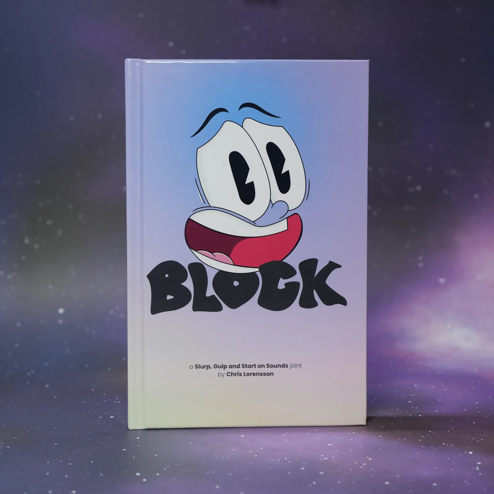

Slurp, Gulp and Start on Sounds
Poetry by Chris Lorensson
Books
-

BLOCK
Anthology
$34.99 -

The Slide Projector
Chapbook
$16.99
About the Project
Slurp, Gulp and Start on Sounds began with the poems I wrote in my late teens and early twenties—raw snapshots of youth, identity, love, and struggle. In 2011, I shaped that work into a book, but after a hard drive crash, the files were lost, leaving only a single proof copy on my shelf.
What could have been the end has instead become the start of something bigger. The project has grown into a series of anthologies and hand-illustrated chapbooks, each one exploring specific themes.
The first anthology, BLOCK, and the first chapbook, The Slide Projector, are releasing soon. BLOCK captures the restless energy of youth and the fight to claim identity, while The Slide Projector dives deep into that single poem—fully illustrated by hand to create a uniquely intimate experience.
That’s just the beginning. Three anthologies and several chapbooks are planned, blending early work with new writing, and expanding into themes of street life, identity, spirituality, capitalism and consumer culture. Slurp, Gulp and Start on Sounds is a living body of work, finding new forms of resistance and creative force.
About the Author

Chris Lorensson is a poet and digital designer whose work spans more than two decades at the intersection of creativity and technology. Alongside his professional design career, he explores music, fine art, illustration, and photography—creative pursuits that inform and enrich his writing. His poetry collection Slurp, Gulp and Start on Sounds, written between 1995 and 2005, is now being shared through a podcast of the same name.
Podcast
I began reading each poem from the original book on this podcast, but then stopped uploading as my book plans evolved. I hope to update the plan for this podcast once my first anthology is released (Q4 2025 planned).